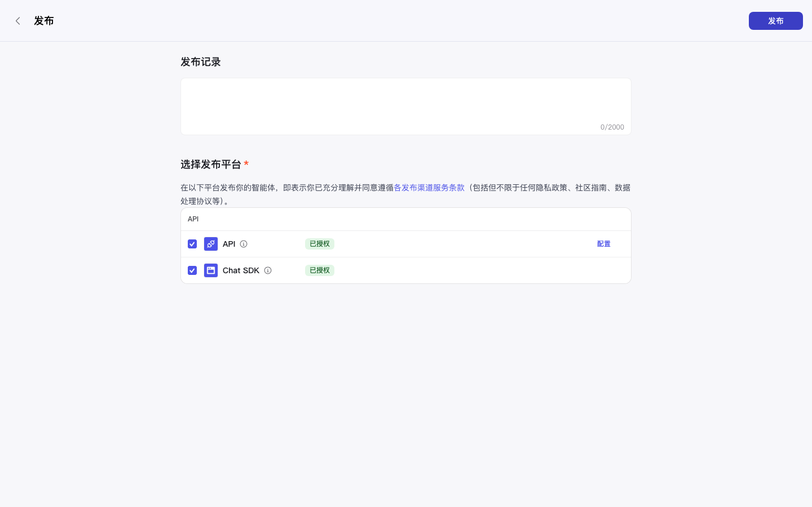
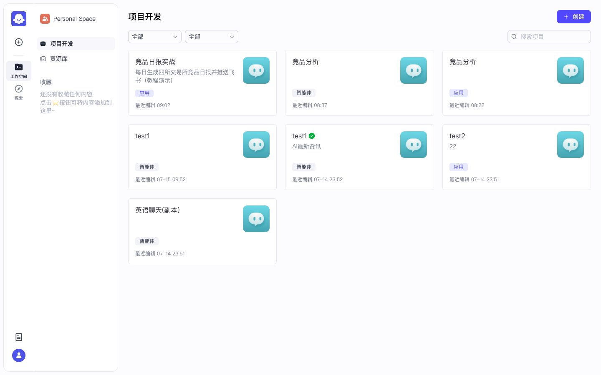

Coze Studio 开源实战 · P08 / 共 10 课 · ≈30 min
发布 · PAT · OpenAPI 调用
发布渠道 + 个人访问令牌 + curl 调工作流 · 开源部分可用 上级目录：Coze 实战总目录
★
界面实录

图：智能体发布页

图：账号相关入口
步
操作步骤
1
发布智能体 / 应用
右上角「发布」，开源版勾选 API / Chat SDK 渠道。
2
创建 PAT
头像菜单 → API 授权 / 个人访问令牌，复制 token（只显示一次）。
3
调用工作流
对已发布工作流：
curl -sS -X POST 'http://localhost:8888/v1/workflow/run' \
-H 'Authorization: Bearer ' \
-H 'Content-Type: application/json' \
-d '{"workflow_id":"","parameters":{"report_date":"2026-07-16","lark_hint":"增长情报群"}}' 开源无内置 cron：用系统 crontab 调 OpenAPI。社交平台 / Store 发布渠道 disabled。